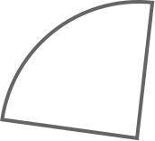
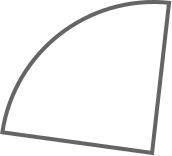
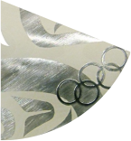
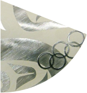

运动员的策略、胆识、技巧于刹那之间在冰面上高速巡回，这样的场景你只有能在短道速滑看到。身体的短兵相接，名次的几度易手，这项被冠以“急速冰上飞驰”的冰上项目受到众多追崇与喜爱。
短道速滑一直是中国冬季运动的强势项目。20世纪90年代以来，短道速滑领域呈现出三足鼎力的局势，中国、韩国、加拿大三国牢牢占据了冬奥会短道速滑奖牌榜的前三名，与剩余国家的奖牌数目差距显著。奥林匹克官网数据显示，1992年至2021年，中国、韩国和加拿大分别在短道速滑世锦赛中占据了24%、34.2%和20.8%的奖牌，多于其他国家所获奖牌的总和。
【1992年至今各国所获冬奥会奖牌数量对比】
点击奖牌披萨查看不同国家成绩
 


 

1.数据来源：奥林匹克官网
2.对于奖牌榜的前四名，我们选取了各国曾举办过的冬奥会的奖牌图片进行填充，并用奖牌的种类（金、银、铜）分别展现该国家在短道速滑冬奥会奖牌榜的名次。
从冬奥会短道速滑项目来看，这四个国家的奖牌分布各有特色。韩国在单人长距离项目上优势明显，在女子/男子1000米和女子/男子1500米项目上的奖牌数量占项目总奖牌数的39%。
从奖牌分布的范围来看，中国是四个国家中唯一一个在各个奥运项目上都获得了奖牌的国家。从奖牌得主的性别来看，加拿大的男子项目明显优于女子项目，中国的情况则相反。
在短道速滑的个人项目中，获得奖牌数目排名前四的运动员中有三位是女性。其中，王濛更是以三金一银一铜的优异成绩，稳居我国冬奥短道速滑项目奖牌榜的第一名。
奖牌数量的背后，是“江山代有才人出，各领风骚数百年”的运动底蕴。
红色冰刃：中国短道速滑的传奇征程
速滑不止，烈焰不熄。李佳军、王春露、杨阳、杨扬等带领中国短道速滑走过初生；新世纪初，王濛、周洋等接棒，继续领跑世界短道速滑；又十年，武大靖、任子威、范可新等优秀的运动员不断涌现；如今，当初的新生代已成为中国短道速滑代表队的中流砥柱。
平昌冬奥会是冰迷们难以忘怀的一次比赛，中国短道速滑队临危不乱、百折不挠的精神在这次赛事中展现得淋漓尽致。在最后一个决赛日之前，只有17岁的小将李靳宇夺得了一枚银牌，武大靖、任子威、韩天宇、范可新都经历了争议性判罚，这与4年前索契冬奥会上2金3银1铜的成绩相去甚远。但是，平昌冬奥会的最后一天，运动员们依旧以顽强的精神虎口拔牙，拿下男子5000米接力银牌，武大靖更是一举打破世界纪录，站上了短道速滑男子500米项目的最高领奖台。
短短9个月后，这个世界纪录在Utah Olympic Oval冰场被武大靖自己再次刷新，并保持至今，无人超越。武大靖和39,505s的世界纪录，注定成为短道速滑历史上浓墨重彩的一笔。
数据来源：https://sport-record.de/short_track/short_track-isu-records.html
这场竞争激烈的比赛在美国盐湖城的Utah Olympic Oval冰场举办，这里产生过着十余次短道速滑世界纪录，目前保持着三项女子世界纪录和三项男子世界纪录，被国际滑联（ISU）称为“世界上最快的冰”。
怎样的冰有助于运动员产生更好的成绩？冰的质量直接影响着冰面与冰刀的摩擦力，是限制运动员速度的重要因素。其次，世界纪录的产生也与冰场的地理位置有关。
1992年以来，创造过短道速滑世界纪录的冰场集中于北纬30-60度。较低纬度的地区温度更高，往往面临着较高的制冰成本，滑冰场馆的数量更少，在冰上项目上天然处于劣势。武大靖、王濛、范可新……这些广为人知的中国短道速滑运动员也大多来自纬度更高的东北三省。
除了纬度，短道速滑运动员的发挥还和冰场的海拔有关。
云端之速：高原冰场如何造就巅峰成绩


项目：男子500米
成绩：39.505
运动员：WU Dajing
国籍：CHN
时间：11.11.2018

项目：男子1000米
成绩：01:20.9
运动员：HWANG Daeheon
国籍：KOR
时间：12.11.2016

项目：男子1500米
成绩：02:07.9
运动员：KNEGT Sjinkie
国籍：NED
时间：13.11.2016
项目：女子500米
成绩：41.416
运动员：VELZEBOER Xandra
国籍：NED
时间：04.11.2022

项目：女子1000米
成绩：01:26.0
运动员：SCHULTING Suzanne
国籍：NED
时间：04.11.2022

项目：女子1500米
成绩：02:14.4
运动员：CHOI Minjeong
国籍：KOR
时间：12.11.2016

项目：女子3000米接力
成绩：04:02.8
运动员：Netherlands
国籍：NED
时间：23.10.2021

项目：2000米混合接力
成绩：02:36.0
运动员：Korea
国籍：KOR
时间：24.10.2021

体育馆, CHN

项目：女子3000米
成绩：04:47.0
运动员：JUNG Eun-Ju
国籍：KOR
时间：15.03.2008
项目：男子3000米
成绩：04:31.9
运动员：NOH Jinkyu
国籍：KOR
时间：19.03.2011


项目：男子5000米接力
成绩：06:28.6
运动员：Hungary
国籍：HUN
时间：04.11.2018
数据来源：https://shorttrack.sportresult.com/Records.aspx?evt=11213100000058
海拔在1000米以上的滑冰场被称为高原滑冰场，武大靖突破世界纪录的Utah Olympic Oval冰场正是高原冰场的代表之一。
2.世界纪录的数据主要来源于“Progression of World Records”网站，我们使用ISU（国际滑联官网）、ChatGPT4.0/3.5、维基百科对信息进行了验证，并确认了相关场馆名称；我们通过Google Earth搜集场馆的海拔（由于网站计算包含建筑高度，我们统一选取了离场馆最近的街道进行海拔的测量）和经纬度。
1992年至今，在盐湖城Utah Olympic Oval冰场和卡尔加里的Olympic Oval冰场产生的短道速滑世界纪录的数量远超其它场馆。在2016年短道速滑世界杯盐城湖站中，竟然有4项短道速滑世界纪录在两天内被打破，这在整个短道速滑发展历史中都是非常罕见的。
统计2016-17赛季至2020-21赛季举办过短道速滑比赛的所有城市，筛选出参加过在不同城市举行的两次比赛的运动员，然后统计这些运动员在每个城市的平均最佳纪录，相减得出差值，最后依照海拔排序建设出一个差异矩阵如下。
2.经过核实，团队对论文数据进行了二次处理，删除了平昌和布达佩斯这两个异常数据。平昌并没有在当地举办过短道速滑赛事，布达佩斯在统计时间内只举办过一次比赛，不符合筛选要求。
矩阵上部颜色明显偏蓝，可知运动员在海拔高的场馆表现明显更优。如果依照海拔高度对色块进行处理，这种趋势将更加明显。
短道速滑前世界冠军王春露曾在采访中表示，高原冰场之所以更容易产生新的世界纪录，是因为高原冰场的空气相对稀薄，空气阻力更小，浇冰的水质纯净，冰面的质量滑感也更好。虽然高原反应会给运动员带来挑战，但经过训练，运动员们往往能够化“高海拔”为机遇，在高原滑冰场留下自己职业生涯的巅峰成绩。
在平原冰场中，唯一能与高原冰场媲美的是北京首都体育馆。2022年北京冬奥会，首都体育馆承办花样滑冰和短道速滑两个项目的比赛，制冰团队通过先进的二氧化碳制冰技术，为运动员们提供了温差均匀、软硬度均匀的冰面。这块冰面海拔仅有50m，却诞生了9项短道速滑世界纪录。可见，突破终究来源于不断提升的自我。
海拔、纬度、冰质……运动员的巅峰成绩受诸多因素影响，每一个世界纪录都由天时、地利、人和的共同造就。这恰恰印证了奥林匹克的格言——更高、更快、更强、更团结。
高原训练、技术革新，从比赛数据的分析到训练方法的改进，从运动员的不懈拼搏到研究人员的精益求精、教练团队的反复琢磨……短道速滑的历史播放至今，每一帧都充斥着汗水和荣耀。
12月9日，女子500米亚军中国选手范可新亲吻冰面
2023-2024赛季国际滑联短道速滑世界杯北京站女子500米（1）颁奖典礼
数据上的小小飞跃是天佑，也是人为。永恒由无数个此刻构成。
后记
很感谢廉莹老师的指导，感谢可视化软件工具与应用这门课提供这么好的实践平台，才让我们有机会和动力去做新的尝试。
最初，团队将选题划定在“冬奥消费”上，但在讨论和资料查询的过程中，我们发现冬奥成绩同场馆存在着有趣的联系。相比“北京冬奥会后的冰雪运动热”，场馆同奥运成绩之间的关系显得更加需要数据支撑证明，也更有问题可挖掘，于是我们将问题细化到了“天时地利人和：场馆如何造就冰上竞速的巅峰成绩？”
在这样细致的问题导向下，我们搜集了大量资料，大多数都来自外文数据库的自然科学板块。看着早就被抛到脑后的摩擦角、受力分析以及更复杂的完全看不懂的函数，我们感到非常为难。我们试图量化冰的质量，量化海拔对运动员身体机能的影响，量化海拔对运动员滑行速度的影响……最终，我们搜集到的公开资料只能帮助我们做到量化海拔对运动员的滑行速度这一点。
我们围绕核心文献反复索引、阅读，最终还是没能找到公开的、数据量充足的公开数据支撑我们的作品。于是我们查找了核心文献的作者们的邮箱信息，恳切措辞，多次尝试，最终非常幸运地收到了孙利鑫老师提供的近12万条原始数据。出于时间原因和体量问题，我们的作品并没有直接使用这12万条数据，但是老师的回信大大鼓舞了我们。
在接下来的制作过程中，团队成员充分意识到了相关性的证明有多么艰难。原始数据体量过大，整理和运转的时间成本都很高，因此我们暂时只得将重点转换，分散成一篇科普性的文章，总结已有的短道速滑巅峰成绩，用短道速滑中国队的故事增强接近性，再在文末借用“天时地利人和”慨叹奥运精神的历久弥新。
最后一周的这“20%”，出于时新性、可信性和适配性，我们试图爬取ISU公开的近三年来短道速滑的所有比赛信息。团队成员努力了三天，略有遗憾，由于嵌套太多，爬虫没有成功。我们只得停下来先完善现有的框架，保证作品的完整度。不过，我们已经准备好踏上之后的debug和统计分析之路。
黄文玥
如果没有这一门课，我也不知道自己要到什么时候才会尝试使用代码进行可视化。我非常喜欢flourish、镝数图表、花火这种辅助工具，它们能够讲清楚问题，也便于读者理解。然而这次，因为作品的数据维度太多，与读者的接近性没那么强，专业性较强，我不得不使用代码进行可视化的尝试。老实说，我并不满意这样的作品（但看久了还是会顺眼很多hhh），在我看来，高维的信息提高了受众阅读的门槛，而我半道出家的代码能力又不足以让受众迅速了解数据的意义。但凡事总是要有个开端，至少这次我知道js比python适配网页许多，下次就不需要重新作图了。希望今后能做出更易懂的、更有趣的、更有信息含量的数据新闻作品。
刘彦彤
其实在尝试复现论文中的爬虫时遇到了不少困难。ISU网站需要突破层层select，动态网页不断变换的div结构，凌乱的id名和class名，最后才能找到想要的table。爬虫的火候看来还不到家。
作品最有意思的部分，也是支撑着做完的原因，在于看到和听到比赛发令枪的那一瞬间。相较于田径比赛，速度滑冰窄小的场地和更快的速度令人心潮澎湃。我们也很快意识到了在这样一个赛场上，零点零几秒对于运动员而言意味着什么。而这毫厘之微竟然让一个人们一般都不会想到的因素影响了比赛的结果——海拔。我们希望用数据向大家说明这件事，更想把速度滑冰的激情带给观看作品的每一个人。
卢冠秋
准备数新大赛的作品时，我们说下一次一定要选一个简单但有趣的选题。结果，这次选的比上次还要难，时间比上一次还要紧迫，想象中的“乐趣”事实上也成了某种苦中作乐。不过，我们小组得以在这个作品中尝试了大量图表，在数据和观点的引领下，探索各式图表，并做出选择，我认为这是本作品的制作过程中最打动我的东西。我意识到，很难有一个图表能够放下我们所掌握的所有信息，并突出所有重点，我们总是要对表达的侧重点进行筛选，而这似乎也从侧面体现出，图表并不存在决定性的“优”或“劣”，只存在“适合”或“不适合”。总而言之，本次作品归根结底，仍旧是“如何讲故事、如何讲数据”的一次叙事上的尝试。
蔡雨薇
最开始想选题的时候，是想把自己的兴趣和作品结合起来，所以提出了冰雪运动这个大方向。最后将选题细化到“场馆如何影响冰上竞速的成绩”时，因为选题的专业性很强，已经预想到了数据搜集和相关证明的艰难。在图表制作的过程中，我第一次使用了python的folium库去绘制地图，虽然最后呈现的效果没有达到预期，但也是一次新的尝试。学会探索和尝试并在最后选择合适的呈现方式，是我在制作这篇作品中收获最大的地方。
对于短道速滑的喜欢成为了坚持将这篇作品尽可能做的更好的原因。在看过很多采访和科普视频之后，我们希望能够通过数据向大家说明到底有哪些因素会影响最终的结果，也希望能让大家感受到短道速滑的魅力。希望在未来能做出更多有意义的数据新闻作品。